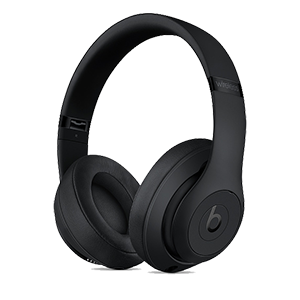

- 
ノイズから解放された、音の極み。
ピュアアダプティブノイズキャンセリングとApple W1チップを搭載した、Beats Studio3 Wirelessが登場。
＜同梱物＞
[01] Beats Studio3Wirelessヘッドフォン
[02] キャリングケース
[03] 3.5mmのRemoteTalkケーブル
[04] ユニバーサルUSB充電ケーブル（USB-A -USB Micro-B）
[05] クイックスタートガイド
＜製品のポイント＞
ピュアアダプティブノイズキャンセリング（Pure ANC）機能が、外部のノイズを能動的に遮断します。。
リアルタイムオーディオキャリブレーションにより、いつでも最高のサウンドを楽しめます。
最長22時間持続するバッテリーで、一日中フル機能でワイヤレスでの再生が可能です。
Class 1 Bluetooth®対応のApple W1チップが、優れた接続性とバッテリー効率を実現します。
バッテリー残量が少なくなっても、Fast Fuel機能搭載なので10分の充電で約3時間再生できます。
Pure ANCをオフにした省電力モードでは、バッテリーは最長40時間持続します。
多機能なオンイヤーコントロールで、通話や音楽のコントロールに加えSiriの起動も行えます。
柔らかなオーバーイヤークッションが、さらなる快適さを提供し、ノイズアイソレーションを強化します。
Beats Studio3 Wireless
￥34,800